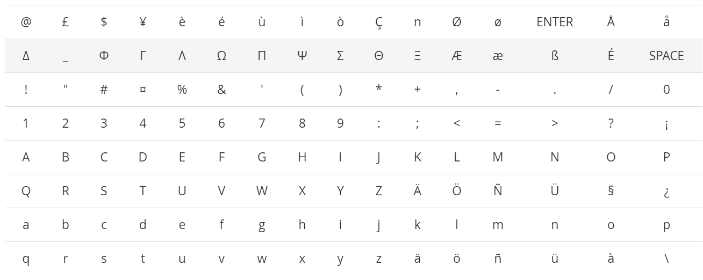

Precios de SMS y preguntas frecuentes¶
¿Qué necesito para enviar SMS?¶
Los mensajes SMS son un servicio de compra dentro de la aplicación (IAP) que requiere créditos prepagados para funcionar.
¿Cuántos tipos de SMS hay?¶
Hay dos tipos: GSM7 y UNICODE.
GSM7 es el formato estándar que tiene un límite de 160 caracteres por mensaje, esto incluye los siguientes caracteres:
UNICODE es el formato que se aplica si se usa un carácter especial que no está en la lista GSM7. El límite por SMS es de 70 caracteres.
Nota
Para SMS con GSM7 el límite de caracteres es de 160 y para Unicode es de 70. Si sobrepasa estos límites, el contenido se divide en varios mensajes y el límite de caracteres disminuye a 153 para GSM7 y 67 para Unicode. El sistema le informará en tiempo real sobre el número de SMS en los que se dividirá su mensaje.
¿Cuánto cuesta enviar un SMS?¶
El precio de un SMS depende del destinatario y la longitud (número de caracteres) del mensaje. Puede consultar el precio por país en Odoo SMS - Preguntas frecuentes.
El número de SMS en los que se divide un mensaje siempre estará disponible en la base de datos.

Cómo comprar créditos¶
Vaya a .

O vaya a .

Truco
Están disponibles créditos de prueba gratuitos si se está utilizando Odoo en línea (Saas), junto con la versión Enterprise, para probar la función.
Más preguntas comunes¶
- ¿Mis créditos caducan en algún momento?No, los créditos no caducan.
- ¿Puedo enviar un SMS a un número de teléfono fijo (no un teléfono celular) porque veo el icono frente al campo “Teléfono”?Solo si ese número de teléfono es compatible con los SMS (por ejemplo, los teléfonos SIP)
- ¿Recibo una factura al comprar mis créditos?Sí.
- ¿El destinatario puede responderme?No, no es posible responder los SMS.
- ¿Qué pasa si envío varios SMS a la vez, pero no tengo suficientes créditos para enviarlos todos?Múltiples comunicaciones SMS a la vez se cuentan como una sola transacción, por lo que no se enviará ningún mensaje hasta que haya suficientes créditos para enviarlos todos.
- ¿Tengo un historial de SMS enviados?Un historial de los SMS enviados, junto con toda la información pertinente relacionada con los contactos a quienes se les envió (y el mensaje), se puede encontrar en la columna Enviado del tablero principal de Marketing por SMS (mientras se encuentra en la vista kanban).
Para obtener información más detallada, seleccione el SMS que desee en el tablero principal (en la vista kanban) y haga clic en cualquiera de los enlaces en el banner azul sobre el formulario de detalles de SMS para obtener más información.
- ¿Puedo enviar tantos SMS como quiera a la vez?Sí, si tiene suficientes créditos.
- Si se envía un SMS a un número que no existe en la lista de destinatarios, ¿se perderán créditos?No, no si el número telefónico tiene un formato incorrecto (por ejemplo, demasiados dígitos). Sin embargo, si el SMS se envía a la persona equivocada (o a un número falso), el crédito para ese SMS se perderá.
- ¿Qué pasa si envío mi SMS a un número de pago (por ejemplo, un concurso para ganar boletos a un festival)?El SMS no se entregará a ese tipo de número, por lo que no se realizarán cargos.
- ¿Puedo identificar los números que no existen cuando envío varios SMS?Solo los que tienen un formato inválido.
- ¿Cómo afecta el Reglamento General de Protección de Datos a este servicio?Consulte nuestras Políticas de privacidad aquí.
- ¿Puedo usar mi propio proveedor de SMS?Sí, pero no es posible hacer uso de esta función de inmediato. Los expertos de Odoo pueden ayudar a personalizar una base de datos para permitir el uso de un proveedor personal de SMS. Consulte nuestros paquetes de éxito aquí.